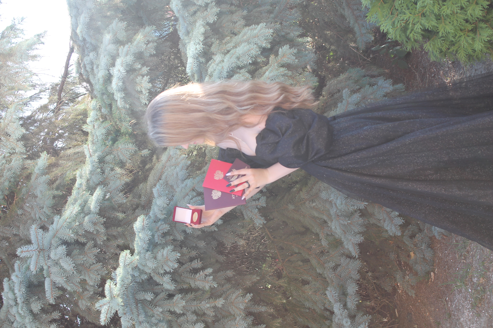
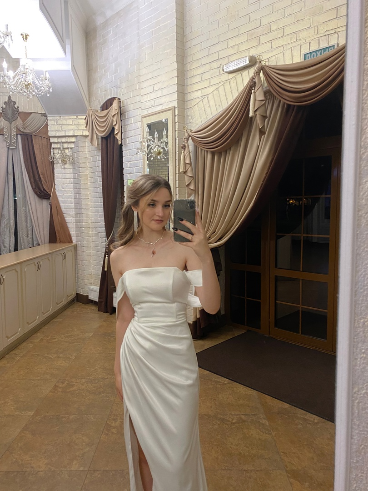

Место учебы
Фундаментальная и прикладная лингвистика, НИУ ВШЭ, Москва
День рождения: 27 июня ♋
Рост: 168 см
Тип личности: Активист INFJ-A
current fav songs:
 
Фундаментальная и прикладная лингвистика, НИУ ВШЭ, Москва
Школа №1 имени Дунина Н.М.
Окончила художественную и музыкальную школы
Умею играть на 4 музыкальных инструментах
5 лет занималась спортивно-бальными танцами
В 2023 году прочитала 93 книги
Мои любимые книги:
Все книги Ли Бардуго
"Портрет Дориана Грея" - Оскар Уайльд
"франкенштейн, или современный прометей" -Мэри Шелли
"Отцы и дети" - И.С.Тургенев
Любимый сериал:
Тень и кость
Любимые музыкальные группы и исполнители:
The Neighbourhood, Chase Atlantic, Get Scared, Palaye Royale, Mindless Self Indulgence, Pierce The Veil, The Weeknd, Lady Gaga, Artic Monkeys, One Direction, 5 Seconds of Summer, Mother Mother, NF, Gorillaz, Too Close To Touch, Bring Me The Horizon, I See Stars, Ice Nine Kills, Bad Omens, Lana Del Rey, coldrain, Deftones, Voila, Taylor Swift, Drowning Pool, Evanescence, The 1975, Ethel Cain, Trevor Something, Three Days Grace, Thousand Foot Krutch, Sleep Token, Darci, Starset, Thirty Seconds To Mars, Mr.Kitty